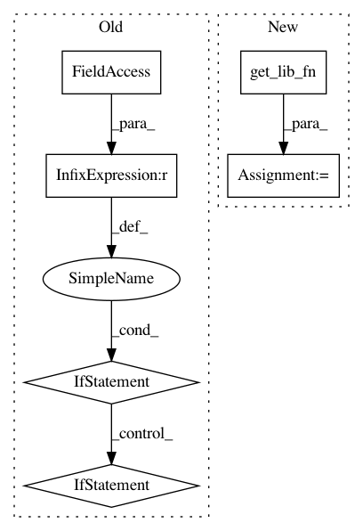

cb83ab691b8c2558a601a56d2a2de2ec5cf6ad09,ants/core/ants_transform.py,ANTsTransform,apply_to_image,#ANTsTransform#Any#Any#Any#,138
Before Change
if image.pixeltype == "unsigned char":
tform_fn = self._tx.transform_imageUC
elif image.pixeltype == "unsigned int":
tform_fn = self._tx.transform_imageUI
elif image.pixeltype == "float":
tform_fn = self._tx.transform_imageF
elif image.pixeltype == "double":
tform_fn = self._tx.transform_imageD
reference = reference.clone(image.pixeltype)
After Change
list : transformed vector
tform_fn = utils.get_lib_fn("transformImage%s%s" % (self._libsuffix, image._libsuffix))
reference = reference.clone(image.pixeltype)
img_ptr = tform_fn(self.pointer, image.pointer, reference.pointer, interpolation)
return iio.ANTsImage(pixeltype=image.pixeltype,
In pattern: SUPERPATTERN
Frequency: 3
Non-data size: 6
Instances
Project Name: ANTsX/ANTsPy
Commit Name: cb83ab691b8c2558a601a56d2a2de2ec5cf6ad09
Time: 2017-10-05
Author: ncullen.th@dartmouth.edu
File Name: ants/core/ants_transform.py
Class Name: ANTsTransform
Method Name: apply_to_image
Project Name: ANTsX/ANTsPy
Commit Name: 7927c56133dbf7ed60e951a51490a6d17d50f44c
Time: 2017-09-24
Author: ncullen.th@dartmouth.edu
File Name: ants/core/ants_transform_io.py
Class Name:
Method Name: transform_from_displacement_field
Project Name: ANTsX/ANTsPy
Commit Name: 7927c56133dbf7ed60e951a51490a6d17d50f44c
Time: 2017-09-24
Author: ncullen.th@dartmouth.edu
File Name: ants/registration/metrics.py
Class Name:
Method Name: image_mutual_information